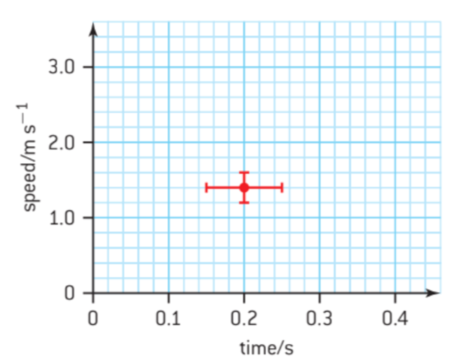
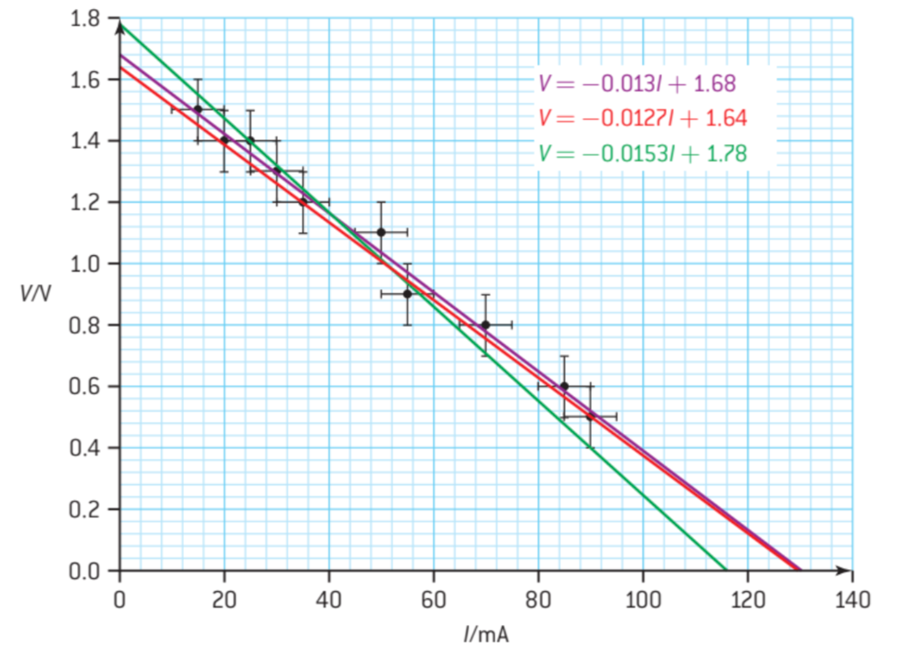
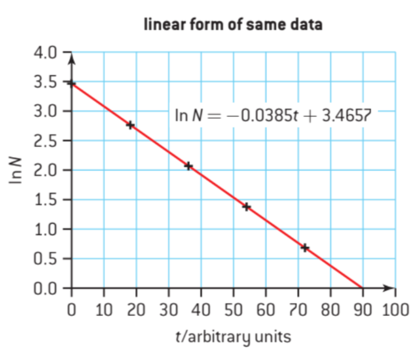

Esta unidad es diferente de las otras unidades del curso. Introduce como usar nota cientifica, errores, y numeros significativos.
| Unidad | Definicion | Simbolo |
|---|---|---|
| metro | la longitud del camino recorrido por la luz en el vacío durante un intervalo de tiempo de $\frac{1}{299792458}$ de segundo. | m |
| kilogramo | masa igual a la masa del prototipo internacional del kilogramo conservado en el Bureau International des Poids et Mesures en Sèvres, cerca de París. | kg |
| segundo | la duración de 9192631770 períodos de la radiación correspondiente a la transición entre los dos niveles hiperfines del estado fundamental del átomo de cesio-133. | s |
| amperio | corriente constante que, si se mantiene en dos conductores rectos paralelos de longitud infinita, circular despreciable sección transversal, y colocados a 1 m de distancia en el vacío, produciría entre estos conductores una fuerza igual a $2×10^{-7}$ newtons por metro de longitud. | A |
| kelvin | la fracción $\frac{1}{273,16}$ de la temperatura termodinámica del punto triple del agua. | K |
| mol | la cantidad de sustancia de un sistema que contiene tantas entidades elementales como átomos hay en 0,012 kg de carbono–12. Cuando se usa el mol, las entidades elementales deben especificarse y pueden ser átomos, moléculas, iones, electrones, otras partículas o grupos específicos de tales partículas. | mol |
| candela | la intensidad luminosa, en una dirección dada, de una fuente que emite radiación monocromática de frecuencia $540 × 10^{12}$ hertz y que tiene una intensidad radiante en esa dirección de $\frac{1}{683}$ watt por estereorradián. | cd |
En notación cientifica, numeros se escribin en la forma $k \times 10^n$. Para numeros muy grandes y pequenos, esta notación es mas eficiente. El numero $2995000000$ se puede reescribir como $2,995 \times 10^{9}$.
| Factor | Nombre | Simbolo |
|---|---|---|
| $10^{24}$ | yotta | Y |
| $10^{21}$ | zetta | Z |
| $10^{18}$ | exa | E |
| $10^{15}$ | peta | P |
| $10^{12}$ | tera | T |
| $10^9$ | giga | G |
| $10^6$ | mega | M |
| $10^3$ | kilo | k |
| $10^2$ | hecto | h |
| $10^1$ | deka | da |
| $10^{-1}$ | deci | d |
| $10^{-2}$ | centi | c |
| $10^{-3}$ | milli | m |
| $10^{-6}$ | micro | $\mu$ |
| $10^{-9}$ | nano | n |
| $10^{-12}$ | pico | p |
| $10^{-15}$ | femto | f |
| $10^{-18}$ | atto | a |
| $10^{-21}$ | zepto | z |
| $10^{24}$ | yocto | y |
| Tipo | Definición | Ejemplo |
|---|---|---|
| Error sistematico | Error que no se introduce por causualidad pero en inexactitud inherente al sistema. Repetiendo una medida no quita el error sistematico. | Con una regla doblada es posible que todas las medidas tomados con el tengan un error |
| Error aleatorio | Un error impredicible en el sistema. | Errores aleatorios pueden occurir en cualquier medida pero occuren mas comunmente cuando un experimentador estima o redondea la ultima cifra de una medida. |
Errores se pueden midir como error absoluto, error relativo, o error porcentaje.
| Error | Simbolo | Definición | Ejemplo |
|---|---|---|---|
| Error absoluto | $\Delta x$ | $\Delta x = \overline{X}-X_i$; El error absoluto de la medida ($\Delta x$) es la diferencia entre el valor real de la medida ($\overline{X}$) y el valor que se ha obtenido en la medición ($X_i$). | $12,7 \pm 0,01$ |
| Error fracional | $\frac{\Delta x}{x}$ | Error absoluto dividido por el valor de la medida. | |
| Error relativo | $\frac{\Delta x}{x} \times 100$ | El porcentaje de error. | $59 \pm 0,5%$ |
En las ecuaciones siguentes, $a, b, c$ son los valores y $\Delta a, \Delta b, \Delta c$ son los errores absolutos.
| Adición y sustracción | Cuando sumamos, sumamos los errores absolutos. Si $a=b+c$ o $a=b-c$ entonces $\Delta a = \Delta b + \Delta c$ |
| Multiplicación y división | Cuando multiplicamos o dividimos, sumamos los errores relativos. Asi que, cuando $a=bc$ o $a=\frac{b}{c}$ o $a=\frac{c}{b}$, entonces $\frac{\Delta a}{a} = \frac{\Delta b}{b} + \frac{\Delta c}{c}$ |
| Elevar una cantidad a una potencia | Cuando $a=b^n$ (donde $n$ puede ser cualquier numero real), entonces $\frac{\Delta a}{a} = | n \frac{\Delta b}{b} |$ |
Errores se pueden enseñar en un grafica de la siguente forma:
 Hay varias relaciones en fisica que no son directamente proporcional y no se puede crear una linea entre una cantidad y otra. Hay dos metodos para tratar con tal caso. Primero, se puede crear una grafica trazando la relación entre las variables. La otra opcion es cambiar una de las variables para que hay una relación linear. Los dos casos se enseñan debajo.

| Tipo | Definición |
|---|---|
| Escalar | Una magnitud sin dirección |
| Vector | Una cantidad con magnitud y dirección |
Debajo puedes encontrar una lista de vectores y escalares común.
| Vectores | Escalares | Comentarios |
|---|---|---|
| Fuerza ($F$) | Masa ($m$) | $\vec{F}$ |
| Displacamiento ($s$) | Longitud ($s$, $d$, etc...) | |
| Velocidad ($v$ o $u$) | Tiempo ($t$) | |
| Impulso ($p$) | Volumen ($V$) | |
| Acceleracion ($a$) | Temperatura ($T$) | |
| Fuerza de campo gravitacional ($g$) | Rapidez ($v$ o $u$) | velocidad y rapidez muchas veces tienen el mismo simbolo |
| Fuerza del campo electrico (E) | Densidad ($\rho$) | |
| Fuerza del campo magnetico (B) | Presion (p) | |
| Area (A) | Energia / Trabajo (W, etc.) | La dirección del area se toma perpendicular a la superficie |
| Poder | ||
| Corriente | ||
| Resistencia | ||
| Potencial gravitacional $(V_g)$ | ||
| Potencial electrica $(V_e)$ | ||
| flujo magnetico |
Se tiene que saber como sumar y trazar vectores. Esto no lo enseño aqui pero lo aprenderas en mates.